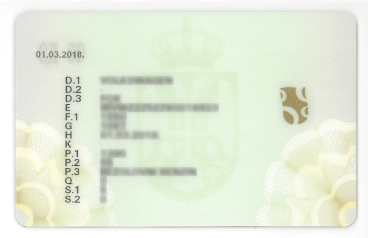

Šta je saobraćaj?
pitanja 1, 2
Saobraćaj je kretanje vozila i lica na putevima, čije je ponašanje uređeno u cilju njegovog bezbednog i nesmetanog odvijanja.
Dakle bilo koje vozilo (zaprežno, motokultivator, traktor, bicikl...) ili pešak, koji se kreću bilo kojim putem ili delom puta
(ulica, zemljani put, biciklistička staza, trotoar ili pešačka staza u slučaju pešaka) čine saobraćaj.
Njiva, privatna površina, poligon
za obuku vozača nisu putevi pa tako vozila ili pešaci koji se kreću tim površinama ne učestvuju u saobraćaju na putu.
Vozač
pitanje 3
Vozač je lice koje na putu upravlja vozilom.
Pešak
pitanja 4, 5, 6
Pešak je lice koje se kreće po putu, sopstvenom snagom vuče ili gura bicikl, vozilo i ručna kolica, kreće se u prevoznom sredstvu za decu ili za nemoćna lica, po putu klizi klizaljkama, skijama, sankama, vozi se na rolerima, skejtu i sl.
Osnovne radnje u saobraćaju, pojmovi i izrazi
Zaustavljanje i parkiranje
pitanja 7, 8, 9, 10
Zaustavljanjem se smatra prekid kretanja vozila na putu koji nije duži od 3 minuta, pri čemu vozač nije napustio vozilo i taj
prekid se nije desio zbog postupanja po određenom saobraćajnom znaku, crvenom svetlu na semaforu ili zbog pešaka već je vozač (uglavnom)
svojom voljom odlučio da zaustavi vozilo.
Ukoliko vozilo stoji na putu duže od 3 minuta ili je vozač napustio vozilo - tada je
vozilo parkirano.
Uključen ili isključen motor kao i to da li sva 4 pokazivača rade ili ne rade
ne utiče na to da li će se vozilo smatrati zaustavljenim ili parkiranim.
Mimoilaženje
pitanja 11, 12
Prolaženјe učesnika u saobraćaju pored drugog učesnika u saobraćaju koji dolazi iz suprotnog smera je mimoilaženje.
Preticanje
pitanja 13, 14
Prolaženјe učesnika u saobraćaju pored drugog učesnika u saobraćaju koji se kreće kolovozom u istom smeru je preticanje.
Obilaženje
pitanja 15, 16, 17, 19, 20
Prolaženјe učesnika u saobraćaju pored drugog učesnika u saobraćaju koji se ne pomera, objekta ili prepreke na kolovozu je obilaženje.
Propuštanje
pitanja 21, 23
Radnјa koju vozač preduzima kako bi omogućio kretanјe drugog vozila ili pešaka koji ima prvenstvo prolaza, tako da ne dođe do promene njegovog dotadašnјeg načina kretanјa je propuštanje.
Vidljivost
pitanja 18, 22, 28
Odstojanјe na kome učesnik u saobraćaju može jasno videti kolovoz je vidljivost.
Uslovi smanјene vidlјivosti na putu izvan naselјa su uslovi u kojima je vidlјivost manјa od 200m.
Uslovi smanјene vidlјivosti na putu u naselju su uslovi u kojima je vidlјivost manјa od 100m.
Na putevima izvan naselja brzina vozila je veća pa je iz tog razloga neophodno da vozač jasno vidi veću dužinu kolovoza kako bi imao
dobovoljno vremena za reakcije. Vozači najčešće smatraju da na smanjenu vidljivost utiče magla, ali to može da bude i zbog kiše, snega, dima, izlaska i zalaska
sunca i sl.
Preglednost
pitanje 98
Odstojanјe na kome učesnik u saobraćaju, s obzirom na fizičke prepreke, može u uslovima normalne vidlјivosti jasno videti drugog učesnika u saobraćaju, odnosno drugu moguću prepreku na putu, je preglednost.
Kolona vozila
pitanja 24, 25, 26, 27
Kolona vozila je niz od najmanje tri vozila koja se kreću ili su zaustavljena jedno iza drugog
i između kojih bez ometanja ne može ući drugo vozilo.
Parkirana vozila nisu kolona.
Mesto za sedenje
pitanja 29, 36
Prostor bez sedišta sa dostupnim elementima za montažu sedišta kao i prostor bez sedišta
sa dostupnim priklјučcima sigurnosnih pojaseva predstavlјa mesto za sedenje.
Iako u tom trenutku ne postoji sedište
i putnik se na tom mestu ne sme prevoziti pod tim uslovima, svakako se ovaj prostor smatra mestom za sedenje tog vozila.
Saobraćajna nezgoda
pitanja 30, 31
Saobraćajna nezgoda je nezgoda koja se dogodila na putu ili je započeta na putu, u kojoj je
učestvovalo najmanje jedno vozilo u pokretu i u kojoj je najmanje jedno lice poginulo ili povređeno ili je nastala materijalna šteta.
Nezgoda koja se desila na trkačkoj stazi nije nezgoda jer se nije dogodila na putu.
Nezgoda u kojoj je porušena dvorišna ograda jeste saobraćajna nezgoda jer postoji materijalna šteta, a vozilo se pre toga kretalo putem.
Odstojanje i rastojanje između vozila
pitanja 32, 33, 34, 35
Podužna udaljenost između vozila je odstojanje.
Bočna udaljenost između vozila je rastojanje.
Mase vozila
pitanja 38, 39, 40, 41, 99, 101, 102
Masa praznog vozila
Masa koju deklariše proizvođač vozila i koja podrazumeva masu neopterećenog vozila sa karoserijom, gorivom i ostalim tečnostima, rezervnim točkom i obaveznom opremom je masa praznog vozila.
Masa vozila
Masa vozila je masa vozila spremnog za vožnju koju deklariše proizvođač vozila i koja podrazumeva masu praznog vozila i masu vozača od 75 kg za sva vozila izuzev vozila na dva i tri točka.
Ukupna masa vozila
Ukupna masa vozila je masa vozila i masa kojom je vozilo opterećeno (lica i teret).
Najveća dozvoljena masa
Najveća dozvoljena masa je masa koju deklariše proizvođač vozila.
Sastoji se od mase vozila i nosivosti.
Odatle je razlika najveće dozvoljene mase vozila i mase vozila - nosivost.
Zbir najvećih dozvolјenih masa vozila koja čine skup je najveća dozvoljena masa skupa vozila.
Masa opterećenog skupa vozila (lica i teret) je ukupna masa skupa vozila.
Deo ukupne mase vozila kojim nјegova osovina opterećuje kolovoz u stanјu mirovanјa vozila je osovinsko opterećenje.
Registrovano vozilo
pitanje 42
Vozilo je registrovano ako je upisano u jedinstveni registar, za njega je izdata saobraćajna dozvola kao i registarske tablice i registraciona nalepnica.
Saobraćajna dozvola
pitanje 43
Javna isprava (rešenje) koja sa nalepnicom daje pravo na korišćenje vozila u saobraćaju je saobraćajna dozvola.
Značenje oznaka na saobraćajnoj dozvoli:
Prednja strana saobraćajne dozvole

A – registarska oznaka vozila B – datum prve registracije I – datum izdavanja saobraćajne dozvole C.1.1 – prezime vlasnika C.1.2 – ime vlasnika C.1.3 – prebivalište i adresa vlasnika vozila C.3.1 – prezime korisnika vozila C.3.2 – ime korisnika vozila C.3.3 – prebivalište i adresa korisnika vozila
Zadnja strana saobraćajne dozvole
D.1 – marka vozila D.2 – tip vozila D.3 – komercijalna oznaka (model) E – broj šasije F.1 – najveća dozvoljena masa G – masa H – važenje registracije (upisuje se datum kada se zamenjuju registarske tablice) K – homologacijska oznaka P.1 – radna zapremina motora P.2 – snaga motora u kW P.3 – vrsta goriva ili pogona Q – odnos snaga/masa u kW/kg (samo za motocikle) S.1 – broj mesta za sedenje uključujući i mesto vozača S.2 – broj mesta za stajanje
Registarska tablica
pitanje 44
Oznaka na vozilu kojom se označava da je vozilo upisano u jedinstveni registar vozila je registarska tablica.
Registraciona nalepnica
pitanje 45
Oznaka na vozilu kojom se određuje da vozilo može da učestvuje u saobraćaju u određenom vremenskom roku je registraciona nalepnica.

Vozačka dozvola
pitanje 46
Javna isprava (rešenјe) nadležnog organa kojim se nekom licu daje pravo da u saobraćaju na putu upravlјa vozilom određene kategorije na određeno vreme je vozačka dozvola.
Popravka i prepravka vozila
pitanja 47, 48
Dovođenјe vozila u ispravno stanјe je popravka vozila.
Promena konstruktivnih karakteristika vozila kojim se menјa namena ili vrsta vozila ili deklarisane tehničke karakteristike vozila je prepravka vozila.
Bicikl
pitanja 50, 51
Bicikl je vozilo koje ima najmanje 2 točka i pokreće se snagom vozača pomoću pedala ili ručica
Podela lakih i teških tricikala i četvorocikala
pitanja 53 - 79
Laki ili teški tricikl
| karakteristike | Laki tricikl | Teški tricikl |
|---|---|---|
| Broj točkova | 3 | 3 simetrično raspoređenih |
| Brzina | ne prelazi 45 km/h | prelazi 45km/h |
| Radna zapremina | ne prelazi 50 cm3 | prelazi 50 cm3 |
| Snaga motora | ne prelazi 4 kw | prelazi 4 kw |
Laki ili teški četvorocikl
| karakteristike | Laki četvoricikl | Teški četvorocikl |
|---|---|---|
| Broj točkova | 4 | 4 |
| Brzina | ne prelazi 45 km/h | prelazi 45km/h |
| Radna zapremina | ne prelazi 50 cm3 | prelazi 50 cm3 |
| Snaga motora | ne prelazi 4 kw | prelazi 4 kw |
| Masa vozila | ne prelazi 350 kg | ne prelazi 400 kg - ako je namenjeno za prevoz putnika ne prelazi 550 kg - ako je namenjeno za prevoz tereta |
*** Kada vozilo sa 4 točka koje je namenjeno za prevoz putnika prelazi snagu od 15 kw, ono tada postaje putničko vozilo.
Putničko vozilo
pitanje 80
je vozilo namenjeno za prevoz putnika koje ima najviše 9 mestauključujući i mesto za vozača.
Autobus
pitanje 81
je vozilo namenjeno za prevoz putnika koje ima više od 9 mesta za sedenje.
Trolejbus
pitanje 82
je autobus koji se preko provodnika napaja električnom energijom.
Radna mašina
pitanje 83, 87, 88
je vozilo namenjeno za izvođenje određenih radova.
Teretno vozilo
pitanje 84
je vozilo sa najmanje 4 točka namenjeno za prevoz tereta.
Skup vozila
pitanje 85
je sastav vučnog vozila i priključnog, koji u saobraćaju na putu učestvuje kao jedna celina.
Turistički voz
pitanje 86
je skup vozila koji čine vučno vozilo i priključna vozila, namenjen za prevoz putnika u parkovima, hotelsko-turističkim i sličnim naseljima, (...) i čija najveća brzina ne prelazi 25 km/h
Priključno vozilo
pitanje 90, 92, 93
priključno vozilo je vozilo koje je po konstrukciji, uređajima, sklopovima i opremi namenjeno i osposobljeno da bude vučeno od drugog vozila, a služi za prevoz putnika, odnosno stvari, odnosno za obavljanje radova
Zaprežno vozilo
pitanje 94
je vozilo koje je namenjeno i osposobljeno da ga vuče upregnuta životinja
Tramvaj
pitanje 95
je vozilo namenjeno za prevoz putnika, koje se kreće po šinama, i koje je radi napajanjem električnom energijom
Psihoaktivna supstanca
pitanje 96
je vrsta droge ili leka na kome je naznačeno da se ne sme upotrebljavati pre i za vreme vožnje
Odbačeno vozilo
pitanje 100
je vozilo koje je vidno zapušteno, nalazi se na putu i nije registrovano ili mu je istekla važnost registracione nalepnice duže od 6 meseci.